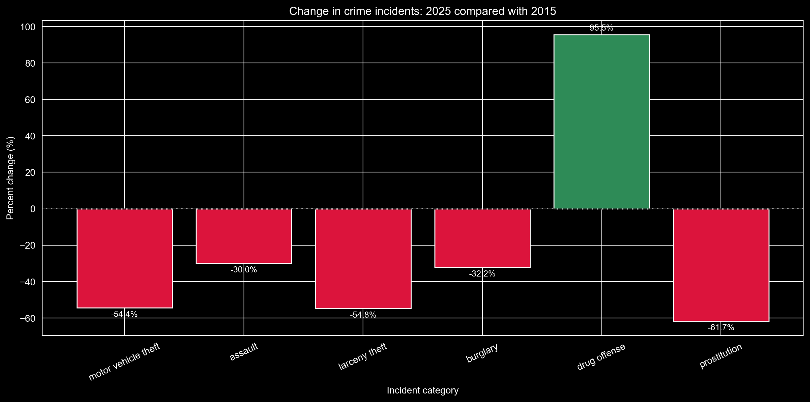

San Francisco has a positive downward going curve in crime statistics. In 2025, the city could report an overall 22% decline in violence crimes, and homicide incidents have decreased by 45%, and robbery decreased by 40% since 2019. Looking at the police reports listed back to 2003, the average number of police reporting it has never been lower. San Francisco is part of a heartwarming turn for the better in California. So why are we seeing one crime is increasing terrifyingly?

Out of six crime types reported by the San Francisco police, as seen in figure 1, only drug offense has increased in the last 10 years. With an increase of more than 95% in a decade, drug offense has had a remarkable change. This was not the intention after the liberation of marijuana November 8th 2016.
In 2015 the state of California legalized marijuana by law with Proposition 64. This happened following 5 years of decriminalization through the Senate Bill 1449. This meant that it became legal to posses 28.5 grams of marijuana, or 5 grams of concentrated cannabis for adults over 21 years old. It would be reasonable to expect a significant fall in the reporting of drug offenses in the city of San Francisco as a result if the legalization. The numbers seem to tell a different story, unfortunately.
Looking at the time map, showing the reported incidents of drug offenses from 2015 to 2025, where marijuana was involved, marked as green dots, plotted against reported drug offenses other than marijuana in the same period, shown as red dots, there is a clear pattern with less and less marijuana.
While the number of marijuana related reports has declined over the last decade, something happened with the harder drugs. Around 2013 a servere epidemi has overflown the state of California, known as The Fentanyl epidemi. Fentanyl is a designer drug that was invented in the 1960ties. It is up to 50 times or more potent than morphine and related plant-based opioids. The addictive drug has quickly become very popular due to it being produced entirely in laboratories with out plant based components, like most opioids. This means that fentanyl is cheap to produce, but with a much higher risk as even very small doses can cause an overdoses. A legalization of fentanyl will, probably, not have the same positive effect on police reports as it was the case with marijuana. However, something has to be done, and many are concerned.
The city of San Francisco delivers key information data of the city through the open data portal, DataSF. Here, you can find datasets with information about the city, including the police reports. The police reports are collected in two datasets called: 'Police Department Incident Reports: Historical 2003 to May 2018', and 'Police Department Incident Reports: 2018 to Present'. In combination they shows every reported crime since 1st of January 2003 and all the way up to present date. The two crime datasets are not aligned with each other, but contain many of the same information, however, some names and crimes are reported differently. Therefore, they cannot be directly be compared until they have been cleaned and harmonized. The harmonization means that some crime categories has to be merged and some has to be renamed to capture the essence of the crimes scenes they represent. For this article, we have used a prioritized focus crime dataset, constructed from the SF Data. However, some categories of the police reports were filtered out, because they contain no information, or contributes very vague to the understanding of the crime scene this article touches.